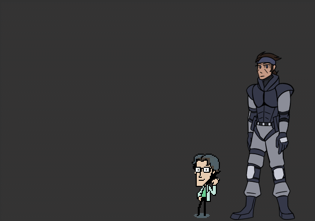

Snake and Otacon

Snake and Otacon, from Metal Gear Solid, are now here to join you on your desktop!
Enjoy new dialogue as they talk to each other, an entirely original shell for Snake, and fun easter eggs. Stay tuned for even more to come, as they also can update to newer versions by themselves using Network Update!
This ghost is also recommended for people new to Ukagaka, as Otacon can give you tips on how to use Ghosts, too.
What's a Ukagaka/ghost?
A Ukagaka, or ghost, is a character (or two) that sits on your desktop! They can do little tasks for you such as emptying your recycling bin, checking for new emails, or checking the weather. Mostly they'll just keep you company and say random dialogue.
Ghosts are very diverse, some have a strong focus on story and discovering information, while others are full of interesting functions or games. Snake and Otacon fall mostly into 'very basic', but hopefully will expand with new functions as their development continues.
How do I use a ghost?
To use a ghost, you'll need a program to run it in. If you're on Windows, you can use SSP. If you're not on a Windows computer there are some options available, but you'll have to play around and see what works for you.
Mac: Ukagaka on Macs, NiseRingo, PlayonMac+SSP, WineBottler
Linux: NINIX-AYA
For those using SSP, go ahead and download the complete install package from the website. When you run it a catgirl should appear and say something in Japanese. Drag and drop the .nar file you download for this ghost on her, and she should install them for you. Once she's done, right click her, hover over 'change ghost', and select the appropriate ghost!
If you get an error window in Japanese when you start SSP, it probably can't find any ghosts to run. You can try dropping the .nar file onto that window. If that doesn't work, click the first button and point it towards your ghost directory(It should be \SSP\ghost).
If the right click menu is in Japanese, the language option is the 4th one up from the bottom. Select English, restart SSP(you can close it with the bottom option), and you should be good to go.
If the catgirl will not install any ghosts for you, you can unzip the .nar file and drag the contents into the \SSP\ghost folder. Your unzipped folder should have subfolders called 'ghost' and 'shell' on the top level. Restart SSP and look in the right click menu again, and they should be in your list of ghosts.
Instructions on how to use each ghost are in their readmes, which should automatically pop up when you install them! If it doesn't appear, you can see it by opening them, right clicking, and going to information>Read me.